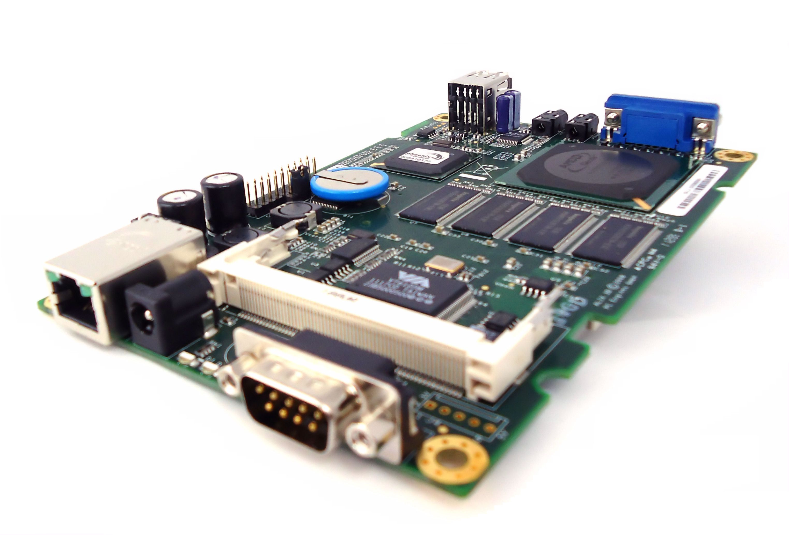
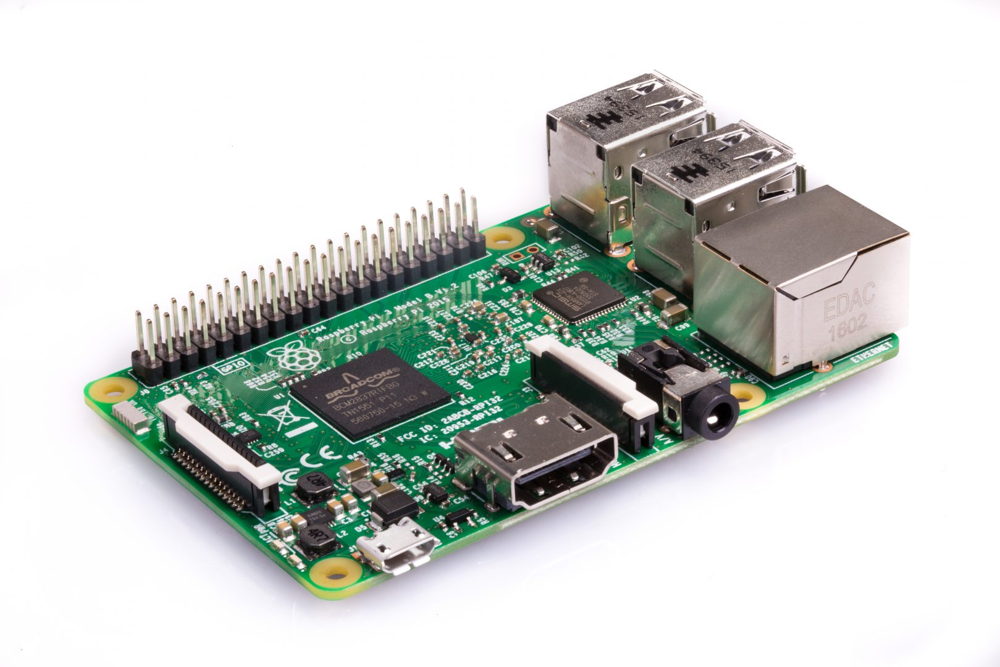
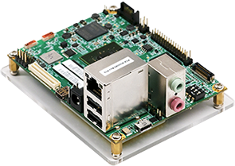
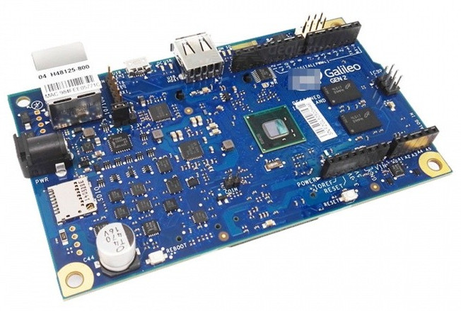
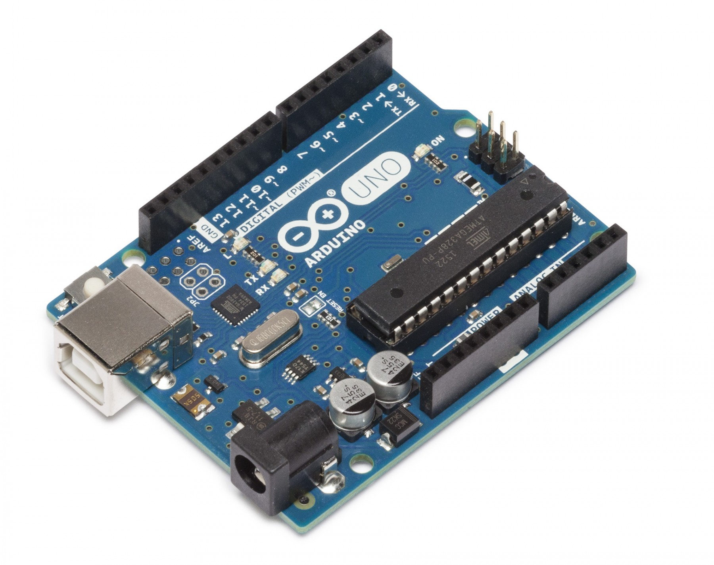

Hardware Equipment
On-board Computers
 |
 |
 |
 |
Sensor Networks
Microcontroller
 |
Software Tools
- Operating Systems
- Ubuntu 14.04 LTS, Ubuntu 16.04 LTS, and Ubuntu 18.04 LTS for Desktops and Laptops
- Raspbian Jessie for Raspberry Pi boards
- Voyage Linux 0.9.2 for Alix.3d3 boards
- Linaro Snapdragon 600 Linux for IFC 6410 boards
- TinyOS for sensor motes
- Ryu SDN Framework for SDN network operating system
- Simulators
- ns-2
- Opportunistic Network Environment (ONE) for DTNs
- Urban DTN Simulator (UDTNSim) for DTNs
- NetSim
- OMNeT++
- Software Tools
- Open vSwitch for OpenFlow switches for SDN
- Wireshark, tcpdump, pyshark, and Scapy
- Computational Tools
- Programming Languages
 Copyright: IIST Systems and Networks Lab
Copyright: IIST Systems and Networks Lab